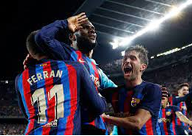

BARCELONA SE LLEVA EL CLÁSICO
¿Adiós a la liga?: "Sí, hay que ser honestos. Nunca bajamos los brazos, pero son ya cuatro partidos de diferencia. No hay nada imposible, pero la verdad que es muy difícil. Habrá que venir a ganar en la Copa".
Segunda mitad rota: "Hoy jugamos un buen partido. Tuvieron ocasiones y nosotros también. Te adelantas, controlas y te empatan en el último minuto. Eso te cambia todo. Quizá no tantas ocasiones, pero tuvimos muchas llegadas en la segunda parte y no las aprovechamos. Una pena el gol anulado... y ellos meten el tanto a la contra".
Courtois, portero del Real Madrid, en Movistar +.